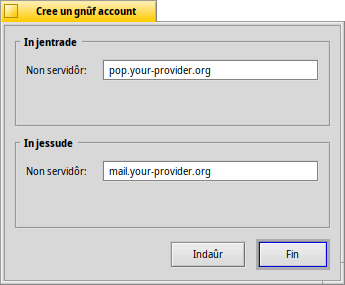
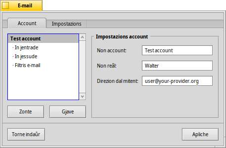
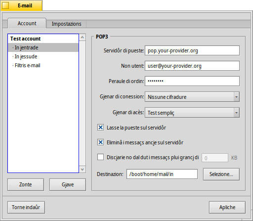
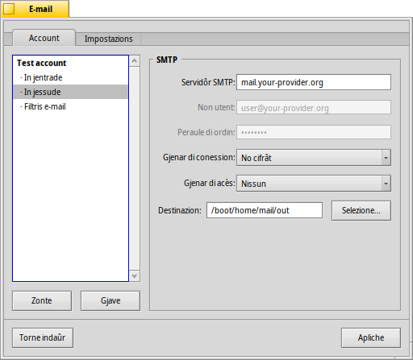
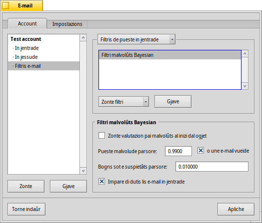
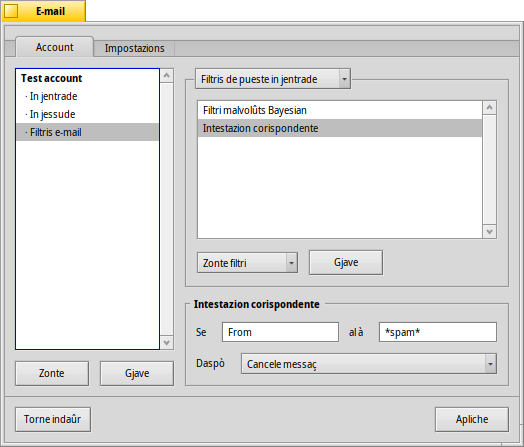
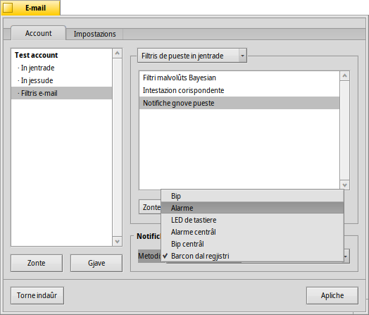
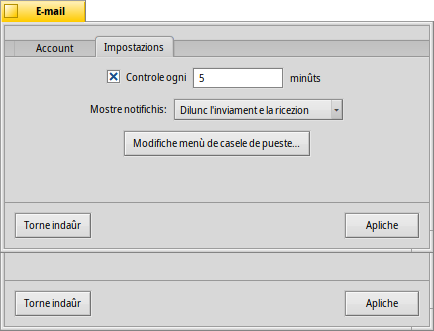
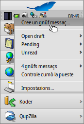

| Tabele |
|
Creâ un gnûf account e-mail Impostazions account Configurâ la pueste in jentrade Configurâ la pueste in jessude Notifichis e filtris di e-mail Configurâ il Servizi de Pueste |
 E-mail
E-mail
| Deskbar: | ||
| Posizion: | /boot/system/preferences/E-mail | |
| Impostazions: | ~/config/settings/Mail/* |
Haiku al furnìs un sisteme che al recupere lis e-mail in maniere regolâr gracie a un Servizi de Pueste (cognossût ancje come mail_daemon) e al salve ogni e-mail come singul file di test. Al analize la pueste e al jemple i siei atribûts cun dutis lis informazions di intestazion necessaris, come par esempli "di", "a", "ogjet" e il lôr stâts di leture. Cumò a puedin jessi interogâts di te o di cualsisei aplicazion. Chest sisteme al rint ancje facil il cambiâ client pe pueste, viodût che ducj i dâts e lis configurazions a restin i stes.
La configurazion e ven fate tal panel des preferencis E-mail.
 Creâ un gnûf account e-mail
Creâ un gnûf account e-mail
Viodin ce mût che si fâs a configurâ un account e-mail.
Tu tachis clicant il boton cussì di creâ un gnûf account cence non. Chest al vierzarà un panel dulà che tu inserirâs lis informazions dal to account:
Par prin, tu stabilissis ce mût che tu otegnis la tô pueste, vie o vie .
Cumò tu inserissis la tô Direzion e-mail, il Non di acès e la Peraule di ordin, da un Non account cussì di ricognossilu sot di Haiku e il to Non reâl.
Se il to account al ven dât di un dai furnidôrs plui cognossûts, Haiku al cognossarà za ducj i detais tecnics come par esempli la direzion IP dal servidôr. Se nol è chest il câs, fasint clic su si vierzarà un altri barcon par inserî chestis informazions a man:
Prime tu stabilissis il Non servidôr, il Gjenar di acès e il Gjenar di conession pe pueste in jentrade, sot di chel i dâts pe pueste in jessude. Tu varessis di cjatâ lis informazions necessaris tal sît web dal to furnidôr di e-mail.
Viôt chi sot par vê plui informazions su lis variis impostazions e su lis opzions adizionâls.
Impostazions account
Selezionant il non di un account te liste a çampe, si pues cambiâ cualchi impostazions gjenerâl:
Il Non account al è il non che al ven mostrât, par esempli, te liste dai account intes preferencis di E-mail. Non reâl al è il non che al ven viodût cuant che cualchidun al ricêf la tô e-mail. Direzion pe rispueste e je la direzion e-mail che e ven doprade cuant che cualchidun al rispuint ae tô e-mail. Di solit cheste e je la stesse direzion che si dopre par inviâ la pueste.
Se tu preferissis doprâ un account e-mail dome par inviâ o ricevi pueste, tu puedis dis/ativâ chê funzion fasint clic diestri sul non dal account inte liste a çampe e meti i segns juscj secont lis tôs necessitâts.
Di plui sul configurâ la pueste in jentrade
Fâs clic su sot dal non dal account par stabilî ce mût che lis e-mail a vegnin ricevudis.
Prime e je la direzion dal pe pueste in jentrade. Se il to furnidôr lu domande, tu pedis fâ l'acès suntune specifiche puarte, al baste zontâle te direzion, separade di doi ponts. Par esempli: pop.your-provider.org:1400.
Daspò tu inserissis lis informazions di acès, Non utent e Peraule di ordin, e se al covente cambiâ il Gjenar di acès, di (che al è chel predefinît) a pe autenticazion.
Se tu dopris POP3 e tu recuperis la pueste di chest account doprant altris computer, tu podaressis volê ativâ la opzion e, dome in locâl, .
Se invezit tu dopris IMAP, tu âs la pussibilitât di sielzi la opzion in locâl. Tu puedis specificâ lis par sincronizâsi dome cuntune specifiche cartele e lis sôs sot-cartelis.
Tu puedis ancje sielzi une determinade dimension. Cheste opzion ti fasarâ vê dome la intestazion e tu podarâs decidi se, dopo vê viodût l'ogjet e il mitent, discjariâ il rest dal messaç e i pussibii alegâts. Util se si à une conession lente.
Tu puedis cambiâ la Destinazion de tô casele di pueste (predefinide: /boot/home/mail/in/), che al è util se tu desideris separâ la pueste di account diferents intes lôr cartelis. Dut câs, lis interogazions ti permin di risolvi istès ben lis robis.
Configurâ la pueste in jessude
Fâs clic su sot dal non dal to account name par configurâ ce mût che a vegnin inviadis lis e-mail.
Prime e je la direzion dal Servidôr SMTP pe pueste in jessude. Come pal servidôr in jentrade che o ven viodût prime, tu puedis doprâ une specifiche puarte se al covente, p.e. mail.your-provider.org:1200.
Se ti covente fâ l'acès, tu cambis il Gjenar di acès a e tu inserissis il non utent e la peraule di ordin parsore. Chel altri gjenar al ven doprât pai furnidôrs di servizis di pueste che a àn bisugne dal control de pueste cun pe identificazion.
Come pe pueste in jentrade, tu puedis ancje cambiâ la Destinazion de tô casele de pueste (predefinide: /boot/home/mail/out/).
Notifichis e altris filtris di e-mail
Lis notifichis pes gnovis e-mail rivadis e i metodis par ordenâ e filtrâ lis e-mail si cjatin in sot di un di account. Tu puedis zontâ cualsisei numar di filtris che a vegnin aplicâts un daûr di chel altri e rangjâju strissinant e molant te lôr gnove posizion.
Pal moment a son trê che tu puedis zontâ. Dopo vê zontât un filtri, tu âs di selezionâlu par viodi lis sôs opzions.
Filtri malvolûts (AGMS Bayesian)

Il filtri pe pueste malvolude (spam) al dopre metodis statistics par classificâ une mail come spam malvolût. I assegne un valôr tra 0 e 1 e tu puedis decidi cuâi che a son i limits par une mail sane e ce che al vignarà considerât malvolût.
Tu puedis vê chê valutazion di malvolûts zontade al inizi dal ogjet.
In di plui, il filtri dai malvolûts al pues imparâ di dutis lis e-mail in jentrade. Clâr, tu varâs di insegnâi sbrumant i fals positîfs, la pueste che e je stade segnade par erôr come malvolude. Tu cjatarâs plui informazions in merit cuant che o cjacararin de aplicazion Mail.
Adun cul chi sot, tu puedis organizâ in automatic la pueste malvolude rilevade.
Filtri di regule

Chest filtri al confronte la intestazion de pueste cuntun model di ricercje e al eseguìs cualchi azion in base aes regulis stabilidis.
Cul prin cjamp di test tu specifichis cuale intestazion controlâ. Chestis a son chês disponibilis:
| il non dal mitent | ||
| la direzion e-mail dal mitent | ||
| la tô direzion e-mail (diferente par ogni account e-mail) | ||
| la direzion e-mail dulà che si invie lis rispuestis | ||
| la date e la ore che e je stade ricevude la mail | ||
| la rie dal ogjet | ||
| lis direzions di ducj chei che a àn ricevût une copie compagne (carbon copy) (Cc) | ||
| il non dal account e-mail | ||
| Il stât atuâl de e-mail. Di solit chest al pues jessi "Read" (let), "Replied" (rispuindût), "Sent" (inviât), "Forwarded" (mandât indenant), "New" (gnûf), o dut ce che tu âs definît tu. Dut câs, une volte che il Servizi de Pueste al à recuperât la pueste, se no tu lu cambiis cuntun filtri, il so stât al sarà simpri "New" (gnûf). | ||
| al ven stabilît dal program e-mail dal mitent (p.e. "urgjent") | ||
| in pratiche al è come "Subject", ma cence robis come Re: o Fwd: | ||
| in base a ce mût che il filtri malvolûts ju à classificâts, chest al sarà o vueit (se no sigûr) o al varà la peraule "Genuine" (san) o "Spam" (malvolût) | ||
| cheste e je une stime numeriche che il filtri malvolûts al à assegnât ae e-mail. A vegnin mostrâts in notazion sientifiche, dulà che 1.065e-12 si tradûs in 1.065 dividût par 10 ae 12ᵐᵉ potence, che in chest câs si tradûs in 0.000000000001065. |
Il secont cjamp di test al ten il to model di ricercje. Al acete espressions regolârs che a permetin grande flessibilitât, però par cuintri, complicant un tic lis robis. Lei alc in merit, al merete e sempliçs modei di ricercje no son cussì complicâts.
Cul menù a tendine sot di chel, tu assegnis une azion par chês voltis che al model al corispuint un risultât de ricercje. Tu puedis spostâ o eliminâ une e-mail, stabilî il stât a "Read" (let) o altri opûr stabilî cun cuâl account di e-mail rispuindi.
Notifiche gnove pueste

Tu puedis sielzi diviersis manieris par jessi notificât che e je rivade gnove pueste. Sot di tu cjatis un ciert numar di opzions che a puedin ancje jessi cumbinâts tra di lôr:
| Nissune notifiche | ||
| Al riprodûs il file sunôr dal event "New E-mail", stabilît tes preferencis Suns, par ogni gnove e-mail | ||
| Al mostre un barcon di alerte par ogni gnove e-mail | ||
| Al fâs lampâ cualchi LED come l'indicadôr bloc-maiusc | ||
| Al mostre un barcon di alerte par dutis lis gnovis e-mail | ||
| Al riprodûs il file sunôr dal event "New E-mail", stabilît tes preferencis Suns, une volte sole pe gnove pueste | ||
| Al mostre il barcon dal regjistri di stât |
Filtris pe pueste in jessude
Pal moment, al è dome un filtri che al à a cefâ cu la pueste in jessude: fortune.
Al tacarà ae fin di ogni mail un "biscot de furtune" divertent o savi sielt a câs, prime di inviâle. Tu puedis fâ une prove a frêt inviant il comant fortune intun Terminâl.
Configurâ il servizi de pueste
Cumò che i servidôrs di pueste in jentrade e jessude (e magari ancje cualchi filtri) a son configurâts, tu âs di dî al Servizi de Pueste che di fat al eseguìs il control e il recupar de pueste, ce mût fâ chest lavôr.
Sot di Control de pueste tu configuris ogni trop timp che si interogarà il servidôr par vê gnove pueste.
Se tu stâs doprant une conession a consum, tu podaressis desiderâ chê funzion e ancje al fin di evitâ di conetisi in automatic dome par controlâ la pueste.
Il Servizi de Pueste al à un barcon di stât che tu puedis configurâ in mût che al vegni fûr , , opûr .
Siguriti che al sedi selezionât o nol sarà in esecuzion nissun mail_daemon par eseguî lis tôs richiestis...
al vierzarà la cartele /boot/home/config/Mail/Menu Links/. Dutis lis cartleis o lis interogazions (!) o i lôr colegaments metûts in cheste cartele a vignaran fûr tal menù contestuâl de icone a forme di casele di pueste dal Servizi de Pueste inte guantiere dal Deskbar.
Di chel menù tu puedis ancje fâ , o modificâ lis .
Se tu tegnis fracât MAIUSC cuant che tu clamis il menù contestuâl, tu otignarâs comants adizionâi:
| Al ufrìs un sot-menù par controlâ dome un specific account | ||
| Ti permet di inviâ la pueste in spiete cence ancje controlâ se e je rivade gnove pueste | ||
| Al jes di dute la infrastruture de pueste (mail_daemon) |
Za la icone a forme di casele de pueste e mostre se si à messaçs no lets (stât "New"), chest al è il câs di cuant che si à bustis dentri de casele de pueste.